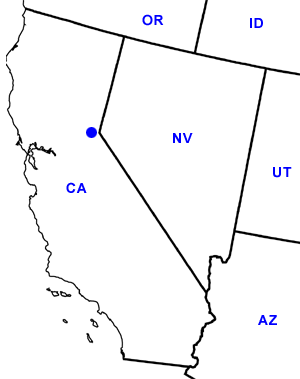

Day Twenty-Four
Lake Tahoe, CA
Date: 07/04/2002
Distance: 0 miles
Weather: Sunny. 80's
We headed up the west (California) side of Lake Tahoe. Exploring and looking for breakfast. We ended up in Tahoe City. A toursity street with lots of nice shops. We found Syd's baglery. How sweet it was to have a bagel. There doesn't seem to be a single bagel shop in the south. A cinnimon raison bagel toasted with butter for both of us and we were ready to see the town. We walked around with Ogden and went down to the beach to test the water. We also took the opportunity to do our Laundy.
We then headed back towards the eastern side of the lake and stopped at the Safeway to stock up on food for lunch and dinner.
On our way home, we stopped at a mini-golf spot for 18 holes of dinasour fun. The place had 3 different elaborate courses. Jared's lack of concentration, and Corin's stellar putting made the game no contest. Even Jared's two hol- in-ones weren't enough.
We headed back to camp. Relaxed for a bit, played some cards.
We then cooked up a traditional fourth of July dinner, hot dogs, on our camp stove.
After dinner, we walked up the road to a view of the lake to observe the fireworks on the other side. They started late, or what we thought was late. The lake is about 12 miles wide, so they were smaller and we couldn't even hear the booms. But they were a lot of them and they were nice to view from a distance. We also picked a spot popular with the locals, so at least it was an authentic Lake Tahoe fourth.